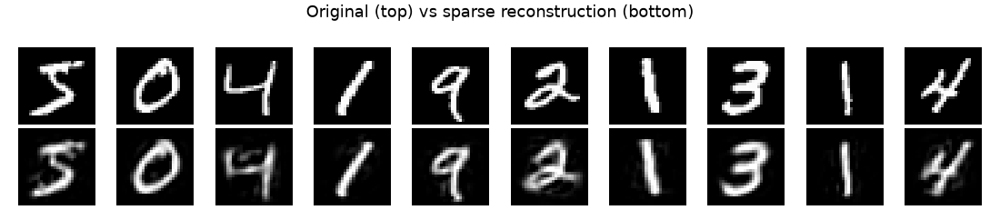
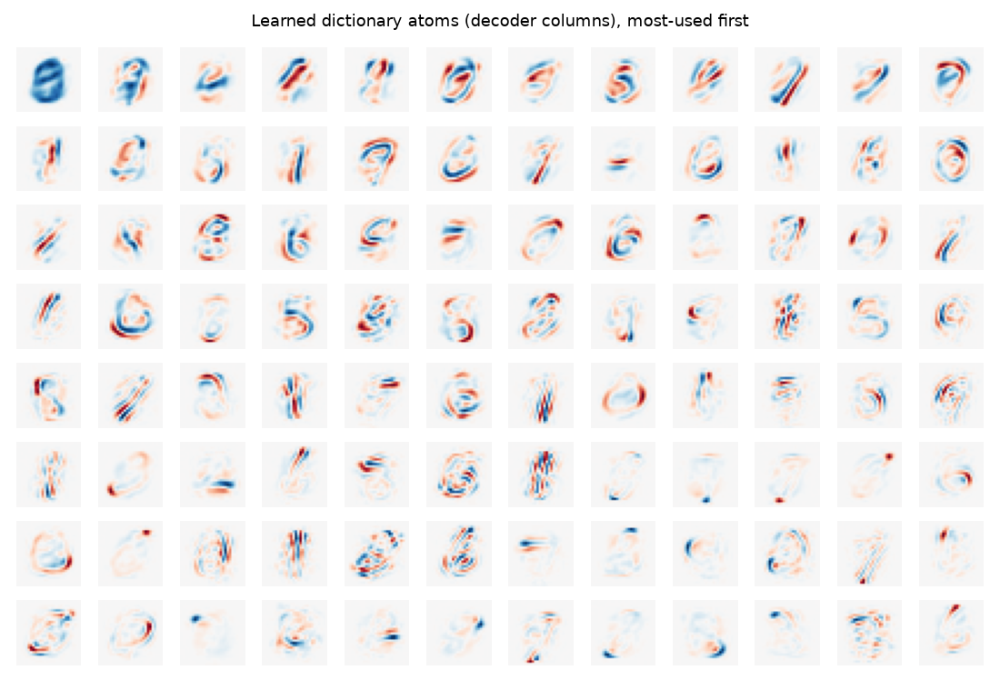
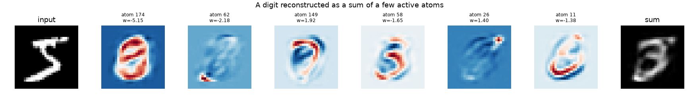

A First Example: Seeing What an SAE Learns
The quickest way to build intuition for a top-k sparse autoencoder is to train
one on images and look at the result, because every learned feature can be
drawn as a picture. This example uses MNIST, the classic handwritten-digit
images (28×28 grayscale, available through the datasets library), but nothing
here is digit-specific: any dense matrix works the same way.
Everything below uses only the high-level public API
(TopKSAEConfig, TopKSAETrainer).
Note
This page is illustrative; you do not need to run it to use Compresso. The
figures are regenerated by docs/gen_figures.py (see that script for the
extra plotting/data dependencies).
Treat each image as a dense vector
We flatten every 28×28 image into a length-784 vector and scale it to [0, 1].
That gives a dense matrix X of shape (n, 784) — exactly the input format
the trainer expects.
import numpy as np
from datasets import load_dataset
ds = load_dataset("ylecun/mnist", split="train")
imgs = np.stack([np.asarray(im, dtype=np.float32) for im in ds["image"][:20_000]]) / 255.0
X = imgs.reshape(len(imgs), -1) # (20000, 784) dense embeddings
Train a top-k SAE
We use a compact undercomplete code (hidden_dim=196 features) and keep only
k=20 of them active per image:
from compresso import TopKSAEConfig, TopKSAETrainer
trainer = TopKSAETrainer(
TopKSAEConfig(
hidden_dim=196,
k=20,
batch_size=512,
epochs=60,
lr=1e-3,
decay=True,
seed=0,
)
).fit(X)
Reconstruction quality climbs quickly. With only 20 active features the reconstructions are recognizably the original digits:
{kind=link}

The decoder is a dictionary
The interesting part is what the model learned. The decoder maps each of the
196 code features back to image space, so every column of the decoder weight is
itself a 28×28 image — a dictionary atom. TopKSAE exposes this matrix
directly:
W = trainer.sae.get_decoder_weight().detach() # (784, 196): each column is an atom
Plotted as images (most-used first), the atoms are clearly stroke- and template-like: loops, diagonals, and digit fragments that combine to form glyphs.
{kind=link}

A code is a recipe
Because the decoder is linear, the reconstruction of any image is just the weighted sum of its few active atoms. We can read a single image’s sparse code, then watch the picture assemble atom by atom:
code = trainer.encode(X[:1]).numpy()[0] # (196,), only 20 non-zero
active = np.nonzero(code)[0] # which atoms fired
contributions = W.numpy()[:, active] * code[active] # (784, 20) pieces
reconstruction = contributions.sum(axis=1) # == trainer.reconstruct(X[:1])
{kind=link}

This is the whole idea in one picture: a dense image becomes a short, signed recipe over a shared dictionary. Each ingredient is reusable across the dataset and individually meaningful — which is exactly what makes the codes good for storage (Input and Output) and clustering (Clustering Sparse Codes).
Reading a sparse code
transform packages the codes as an SRPTensor, the
fixed-k container used throughout Compresso. Instead of a dense matrix it stores
each row as just its k active (column, value) pairs, so you can read one
image’s “recipe” straight off the tensor:
srp = trainer.transform(X)
print(srp.shape, srp.k) # (20000, 196) 20
# image 0: the atoms that fired and their signed weights
srp.cols[0] # active feature indices, e.g. tensor([174, 62, 149, 58, 26, ...])
srp.vals[0] # matching coefficients, e.g. tensor([-5.15, -2.18, 1.92, -1.65, 1.40, ...])
Each index points to one dictionary atom from the grid above, and the paired
value is its coefficient in the additive sum — the same numbers shown in the
breakdown figure. When a downstream tool needs a standard layout instead,
srp.to_dense() returns the padded (20000, 196) matrix; torch-sparse and
SciPy conversions, plus saving and reloading, are covered in Input and Output.
Where to go next
Input and Output — how those codes are stored and how to save/reload them.
Advanced Usage — the same model without the trainer wrapper, plus the knobs (scoring mode, straight-through estimator, sparsity schedules).
Clustering Sparse Codes — group sparse codes into interpretable themes at scale.